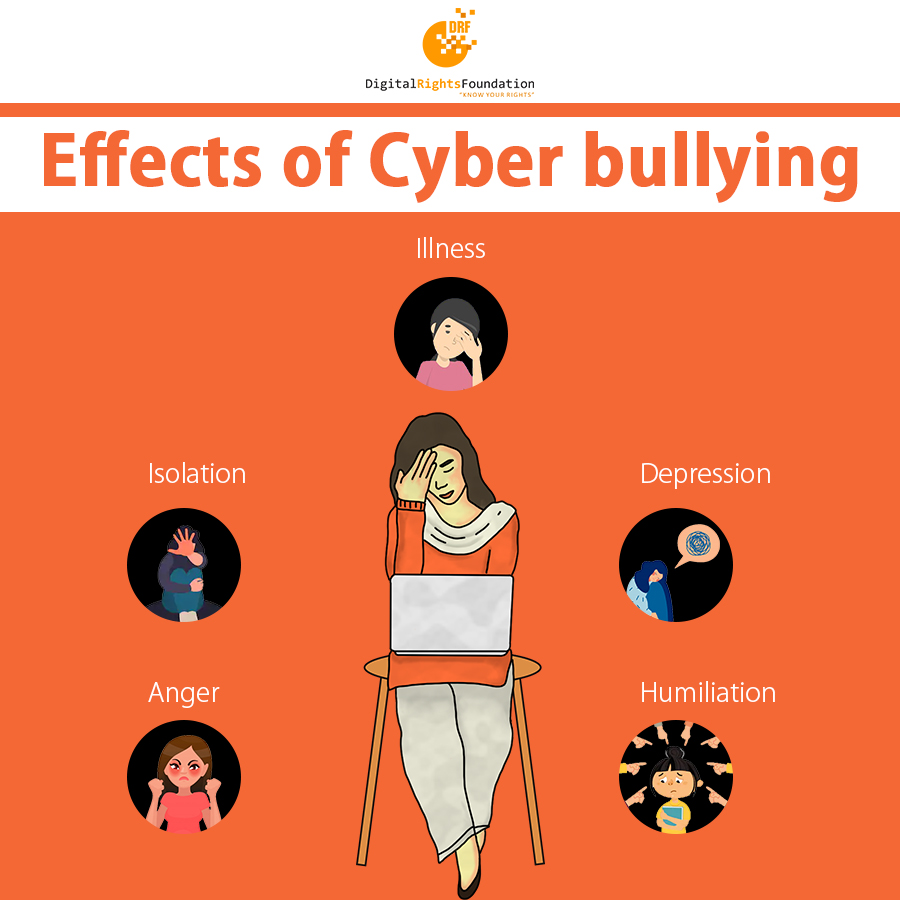
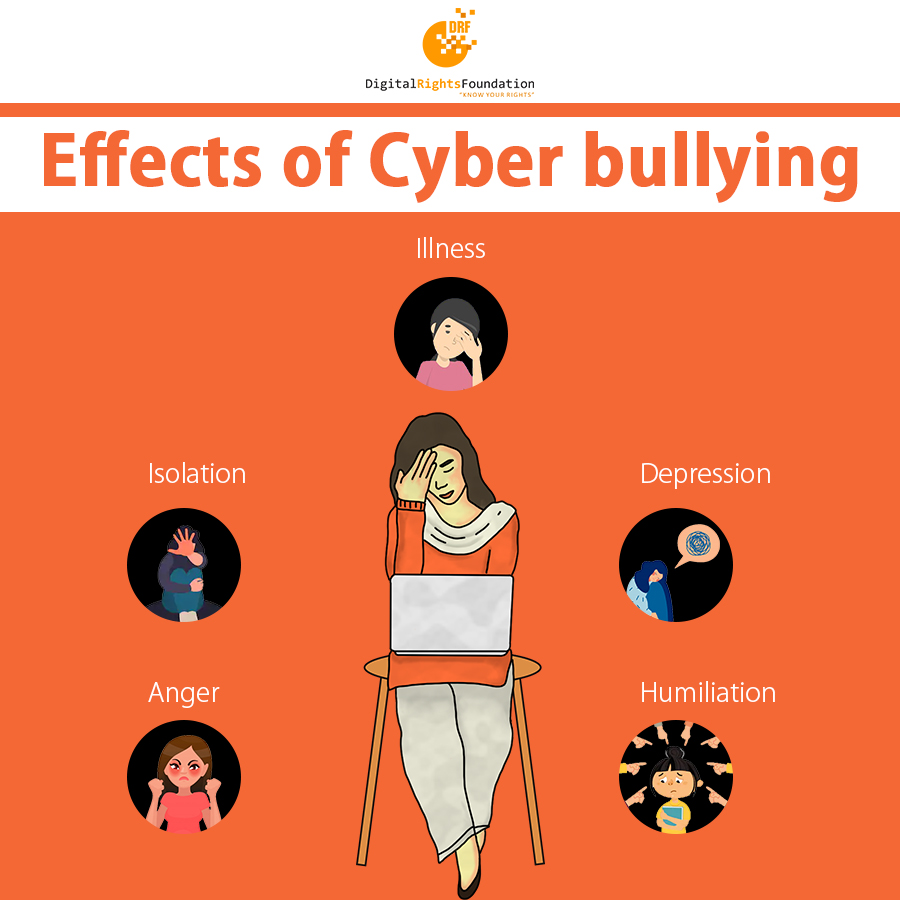

Cyberbullying is the use of technology to harass, threaten, embarrass, or target another person. Online threats and mean, aggressive, or rude texts, tweets, posts, or messages all count. So does posting personal information, pictures, or videos designed to hurt or embarrass someone else. Some cyberbullying crosses the line into unlawful or criminal behavior.
Victims can experience significant social isolation and feel unsafe. It can lead to emotional and physical harm, loss of self-esteem, feelings of shame and anxiety, concentration and learning difficulties. Adolescents who are targeted via cyberbullying report increased depressive affect, loneliness, and somatic symptoms. Incidents of young people committing suicide have also occurred.
 

| Age | percentage |
|---|---|
| 13 | 25.1 |
| 14 | 27.2 |
| 15 | 27.7 |
| 16 | 20.2 |
| 17 | 16.2 |